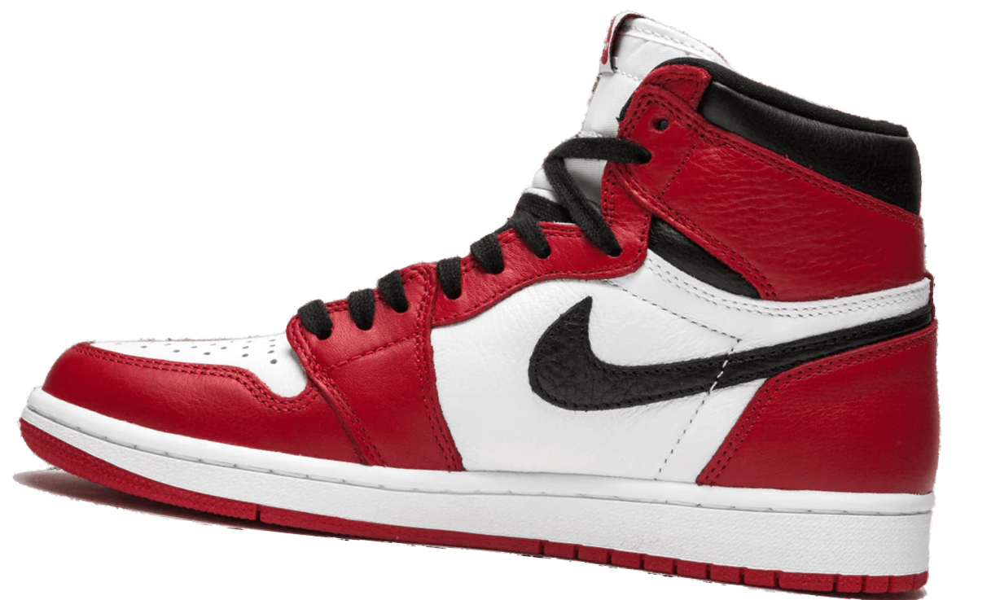

Nike Air Jordan 1 High OG "Homage 2 Home" в красном цвете — это ретро-стилизованные кроссовки, представляющие дань уважения домашним цветам команд NBA. Красный цвет — ключевой элемент, вероятно, сочетающийся с другими цветами, символизирующими конкретную команду. Они выполнены в традиционном стиле Air Jordan 1.
